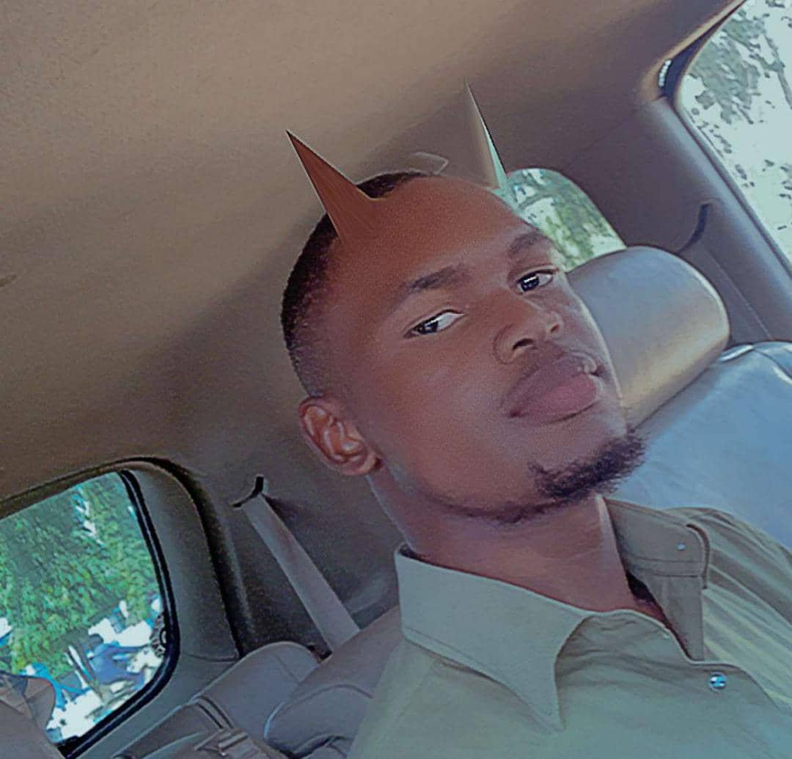

Onyemakonor-Uzoka Samuel C.
Web developer
Contact me
Summary
I am a Motivated undergraduate aerospace engineering student with a passion for innovative technology and design.
Skilled in web design and development, proficient in HTML, CSS, JavaScript, and various web development tools.Strong problem-solving abilities and a keen eye for detail, demonstrated through personal web projects and academic achievements.
Excellent team player with experience in collaborative projects, eager to leverage both engineering and web design skills to contribute to dynamic, tech-driven environments.
SKILLS AND COMPETENCES
- Time Management Skills.
- Good Interpersonal relationship and team spirit.
- Fluent use of English.
- Embedded Systems Engineering.
- Computer Aided Design CAD
- Computational Fluid Dynamics CFD
- Web design.
EDUCATION
Air Force Institute of Technology, Kaduna / Degree
February 2021 – Present, Kaduna State.
B. Eng. Aerospace Engineering (Undergraduate)
Abbot Dayspring College / Secondary Education
September 2015 – July 2019, Lagos State.
Secondary School Leaving Certificate.
Gomal Baptist College / Secondary Education
September 2013 – July 2015, Oyo State.
Moeka Nursery & Primary School / Primary Education
September 2007 – July 2013, Lagos State.
Primary School Leaving Certificate.
EXPERIENCE
631 Nigerian Air Force Aircraft Maintenance Depot (ACMD) / Intern
May 2024 - Present, Lagos State
- Avionics
- Line Inspection
- Tagging
AFIT Aerospace Systems Lab / Intern
January 2023 – Present, Kaduna State.
- Embedded Systems Engineering (Arduino)
- Computer Aided Design (SolidWorks, CATIA).
- Computational Fluid Dynamics (SolidWorks).
- Research for building more competent UAVs.
Proforce Defence Limited
November 2023 – January 2024, Ogun State.
- Modelling of UAVs (SolidWorks).
- Research for building more competent UAVs.
- Maintenance on UAVs.